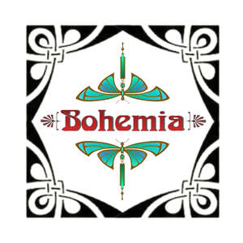

Trade Mark Journal No.2025/050 12 December 2025
UK00004300128 24 November 2025 (3,6,14,15,24,25,26,35)

- Class 3
- Amber [perfume]; Aromatics for fragrances; Ethereal oils for fragrancing; Incense; Incense cones; Incense sachets; Incense spray; Incense sticks; Joss sticks; Temporary tattoo transfers for use as cosmetics; Temporary tattoos for cosmetic purposes.; Nail art stickers; Perfume oils,Perfumes for ceramics; Potpourris [fragrances] Room perfume sprays; Solid perfumes; Aromatic natural resins; Massage oils; hair dyes and colouring; Body art stickers.
- Class 6
- 3D wall art made of common metal; Figurines of non-precious metal; Metal handles; Furniture for doors [metal]; Metal door knobs; Metal works of art [common metal]; Nameplates of metal; Ornamental figurines of common metal; Sculptures of non-precious metal; Statuettes of non-precious metal; Metal decorative boxes .
- Class 14
- Jewellery; Articles of jewellery imitation jewellery and plastic jewellery; Earrings; Rings; Necklaces not of precious metals; Bracelets; Ankle Bracelets; Friendship Bracelets; Objet d'art made of precious stones; Silver jewellery; Costume jewellery; Fashion jewellery; Body costume jewellery; Body jewellery; bone jewellery; figurines of precious stones; beads for making jewellery; jewellery in the form of beads; Jewellery made of precious stones; Wooden jewellery boxes.
- Class 15
- Musical instruments ; Cases for musical instruments; Musical instruments, in particular singing bowls and sticks; cases for musical instruments, in particular for singing bowls; gongs; tubular bells; metal bells [musical instruments].bags adapted for musical instruments, bamboo flutes, bandonians, castanets, chimes (musical instruments), covers (shaped) for musical instruments, cymbals, drums (musical instruments), drumsticks, flutes, gongs, guitars, handbells (musical instruments), harmonicas, harmoniums, harps, instruments (musical), iron xylophones, Jews' harps (musical instruments), languets, marimbas, metal bells (musical instruments), musical boxes, musical instruments, musical wind instruments, ocarinas, percussion instruments (musical), percussion musical instruments, recorders (musical instruments), stands for musical instruments, sticks (drum), stringed musical instruments, struck stringed instruments, tambourines, tom-toms, triangles (musical instruments), whistles (musical instruments), wind instruments (musical), woodwind instruments, xylophones.
- Class 24
- Household textile goods; Bed throws; bedspreads; Blankets; brocade; bunting; cloth coasters; cloth flags; coverings for furniture; Bean bag covers; Cushion covers; fabric flags; Banners; Bean bag covers; fabric for the manufacture of clothing; Textiles; Batik fabric Throws; Handcrafted textile wall hangings; Wall hangings; Wall hangings of textile.Tableware; Coverings for furniture; Fabrics for the manufacture of furnishings; Furnishing and upholstery fabrics ; Interior decoration fabrics; Kitchen and table linens ; Kitchen linen ; Kitchen towels; Materials for soft furnishings ; Soft furnishings ; Textiles and textile goods; throws and bed spreads; textile coasters; cloth coasters; coasters [table linen]; mats [coasters] of textile; kitchen and table linens; Textiles for furnishings; Window furnishing fabrics; Embroidery fabric ; Silk fabric; hemp fabric; nettle fabric.
- Class 25
- Sequin dresses, sequin jackets, hooded tops, sequin Bra Tops; Crochet garments; Capes; Dancewear; Dance Items in the form of clothing; Hoods; Hoodies; Hooded Pullovers; Hooded Sweatshirts; Snoods; Silk Clothing; Men's and Women's clothing; Ponchos; gloves; scarves; hats; socks; Childrens clothing ; tops; jackets, coats, waistcoats; shorts, trousers; dresses, skirts; headscarves; belts; Hemp clothing ; Nettle clothing; Embroidered clothing.
- Class 26
- Clothing accessories being emblems and patches; Embroidery including garments; Fabric appliques; Heat adhesive patches for decoration or repair of textile articles; Sewing articles and decorative textile articles; Ribbons and braids; accessories for apparel; belt buckles; embroidery for garments; glass beads, other than for making jewellery; hair bows; hair ornaments; hair fastening articles; artificial flowers; hair decorations; hair accessories, namely hair ties, hair clips, hair slides, hair scrunchies, jaw clips; buttons; edgings for clothing; embroidered patches for clothing; buckles for clothing; buttons for clothing; braids; lace and embroidery, haberdashery ribbons and braids; fabric appliques [haberdashery]; shoe laces; hair ribbons; ribbons of textile materials; sequins; wigs; buckles; cloth badges; other badges not of precious metal or cloth; rosettes; ornamental novelty badges; charms, other than for jewellery, key rings or key chains; decorative textile articles; charms for mobile phones; .
- Class 35
- Retail services connected with the sale of aromatic oils, scented oils, aromatherapy oils, aromatic essential oils, blended essential oils, etheric oils, ethereal oils, perfume oils, soap incense, incense cones, incense sticks, reed diffusers, air fragrance reed diffusers, potpourri, candles, perfumed candles, tealights, candleholders, works of art made of wood, wax, plaster or plastic, decorative mirrors, mobiles and wooden boxes, mobiles, wooden panels and wooden boxes, door knobs of common metal, metal coat hooks, metal door furniture, metal knobs, lampshades, lampstands, lamps, lanterns, silver jewellery and imitation jewellery, steel jewellery, horological and chronometric instruments and apparatus, watches and clocks, badges and brooches, key chains, jewellery boxes, jewellery boxes and watch boxes, jewellery, jewellery holders; Retail and wholesale services connected with the sale of precious stones; Retail services connected with the sale of musical instruments and cases for musical instruments, wrapping paper, gift wrapping paper, decorative wrapping paper, gift bags, paper gift bags, printed matter, stationery, blank journals, paper banners, pencil cases, stationery, desktop organizers, coasters of cardboard, art pictures, art prints, prints, printing blocks, blank cards, greeting cards, calendars, notepads, books, gift boxes, stickers, decalcomania, pouches and shoulder belts, bags, purses, wallets, key cases, trunks, suitcases, rucksacks, travel bags and walking sticks, handbags, shoulder bags, shopper bags, side bags, yoga bags, leather goods, furniture, record boxes, mirrors and picture frames, soft furnishings, decorative mobiles, clothes hooks, chests, wind chimes, wind chimes [decoration], dreamcatchers [decoration], tableware, household containers, glass containers, kitchen containers, soap containers, drinks containers, incense pots, incense burners, incense stick holders, aromatic oil diffusers other than reed diffusers (electric and non-electric), essential oil burners, fragrant oil burners, fragrancing apparatus, ceramic tableware, pottery, coasters [tableware], bowls, dishes, jugs, mugs, cups, glasses, drinking vessels and barware, chopping boards, vases, flower vases, planters of earthenware, planters of pottery, planters of clay, planters of plastic, money boxes (not of metal), enamel boxes, enamelled boxes, boxes of glass; Retail services in connection with the sale of bamboo kitchen utensils, kitchen utensils, candle jars [holders], whisky stones, tea-light holders, glass holders, candles, incense burners and pots, ceramics for kitchen use, ceramics for household purposes, earthenware mugs, figurines [statuettes] of porcelain, household textile articles, household textile goods, bed throws, bedspreads, blankets, brocade, bunting, cloth coasters, cloth flags, coverings for furniture, beanbag covers, cushion covers, fabric flags, banners, bean bag covers, fabric for the manufacture of clothing, textiles, batik fabric throws, handcrafted textile wall hangings, wall hangings, wall hangings of textile, tableware, coverings for furniture, fabrics for the manufacture of furnishings, furnishing and upholstery fabrics, interior decoration fabrics, embroidered fabrics; Retail services for clothing and headgear, embroidered clothing, hangings (non-textile), mobiles [toys], Christmas stockings, Christmas crackers, Christmas dolls, toy Christmas trees, Christmas tree decorations, ornaments for Christmas trees, tinsel for decorating Christmas trees, festive decorations and artificial Christmas trees; Retail services in connection with the sale of new and used musical recordings, vinyl records, tapes, CDs; Retail services in connection with the sale of metal hardware; Retail services in connection with the sale of fashion accessories, hair colourants and dyes and haberdashery; Retail and wholesale services connection with the sale of clothing and dance wear; Retail services in connection with the sale of furniture and furnishings; Retail services in connection with the sale of home textiles; Retail and wholesale services in connection with the sale of fabric.
Alex McCluskey
Lynn Mckay